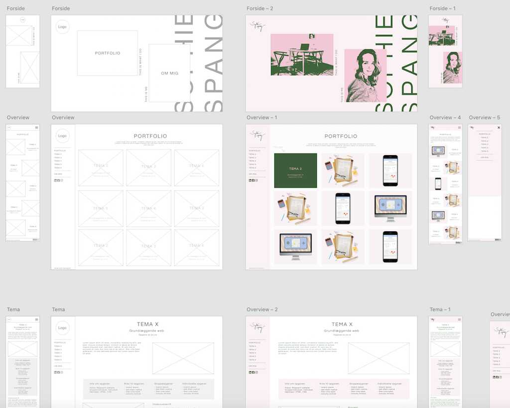

Tema 6
Eksamensopgave 1 semester
Opgave 06_01_01 Portfolioeksamen
I "Tema 6 - Portfolioeksamen" skulle jeg samle min læren og viden fra første semester på et portfolio website. Jeg skulle kunne demonstrere viden, færdigheder og kompetencer, og kunne reflekterer over hvad jeg har lært.
Info om opgaven
- Fokus: Demonstrer viden, færdigheder og kompetencer
- Gruppe/individuel: Individuel
- Værktrøjer: HTML, CSS, JavaScript, Adobe-pakken
Krav til opgaven
- Håndkodes i HTML, CSS (og evt. JavaScript)
- HTML og CSS skal valideres
- Websitet skal indeholde følgende sider: forside, portfolio, om mig
Gruppeopgaver
- Pilotprojekt
- Redesign og temadokumentation
Individuelle opgaver
- Responsive_site_v2
- Idé
- Endelig prototype
- Pitch
- Assetliste og designdokumentation
- Individuelt spil
- Pilotprojekt
Proces
Da jeg ikke før har lavet et websites portfolio, startede jeg ud med at lave en masse deskresearch. Jeg søgte informationer omkring hvad der var vigtigt at have med i sit portfolio. Jeg ledte også efter inspiration på diverse hjemmesider. Ud fra det lavede jeg nogle skitser til layoutet. Det var vigtigt for mig, at siden var overskuelig og gav mening i forhold til brugerrejsen, men samtidig ville jeg også gerne have et visuelt flot (men minimalistisk) udtryk. Jeg fortsatte min idegenerering, og lavede moodboard til, hvordan jeg gerne ville have stemningen på sitet. Ud fra det skitserede jeg også idéer til logo, som jeg efterfølgende rentegnede i Adobe Illustrator.
Efter at have lavet skitser til layoutet af websitet, begyndte jeg at lave wireframe for opbygningen af sitet i Adobe XD. Jeg lavede mobile-first og efterfølgende for desktop. Da jeg var tilfreds med wireframen gik jeg i gang med at lave styletile - igen ud fra mit moodboard. Jeg valgte at arbejde med de komplimentærerfarver grøn og lyserød, både fordi det er to farver jeg elsker, men også for at skabe blikfang på siden. Dette legede jeg også med i photoshop til mine billeder på forsiden, hvor jeg blev inspireret af popart-stilen til noget af min fotostil.
Jeg gik nu i gang med at lave et mock-up af websitet, ved at fylde mit wireframe ud. Dette blev efterfølgende til en prototype, som jeg testede med en tænke-højt-test på en testperson. Hans kommentarer til sitet var, at han godt kunne lide at menuen var i siden, han synes forsiden var inspirerende, men at stilen på portfolioet og forsiden ikke nødvendigvis hang så godt sammen. Det forsøgte jeg at lave om på ved at ændre lidt på fonten, da jeg synes det var svært at skulle ændre på billedstilen på portfolioet, da jeg gerne nemt vil præsenterer de forskellige projekter.
Da jeg nu havde styr på prototypen, gik jeg i gang med at lave et layoutdiagram, da jeg så havde et godt udgangspunkt i forhold til at skulle i gang med at kode. Layoutdiagrammet blev dog ændret lidt i løbene, da jeg fandt lidt fejl i det undervejs gennem kodningen.
Jeg oploadet mine ting til GitHub og connectede til Netlify, hvorefter jeg lavede en Lighthouse-test for at se hvad jeg kunne forbedre i forhold til kvaliteten af hjemmesiden. Jeg fandt frem til - som jeg havde bemærket, at jpg-filer fyldte alt for meget, og derfor var virkelig lang tid om at loade. Derudover var scoren på "accessibility" ikke så høj, men det fik jeg ændret i forbindelse med, at jeg validerede mine HTML og CSS filer. Jeg gik også ind og ændrede på størrelsen på mine billeder, og herefter lavede jeg en ny lighthousetest som viste næste 100 i alt, og jeg endte med at have en hjemmeside der var i rigtig høj standard.
Det kunne også have været interessant at lave en eksperttest, men grundet corona fandt jeg ikke det muligt. Med en eksperttest ville der blevet kigget på brugervenligheden fra en ekspertssynsvinkel.
Reflektioner
Det har for mig været super spændende at arbejde med denne eksamen. Jeg har fået lov til at lege, lære og bruge de værktøjer jeg har lært gennem semesteret. Jeg synes, at jeg har grebet opgaven godt an, ved først at lave en masse research, inden at jeg bare kastede mig over at kode noget. Dermed har jeg hele tiden haft en plan, og noget at gå tilbage til hvis jeg mistede fokuset. Jeg har forsøgt at udfordre mig selv, og selvom jeg mødte bump på vejen, så var jeg stædig nok til at finde en løsning. F.eks. drillede forsiden mig ret meget, men så gik jeg i gang med noget andet, og gik så tilbage til det med friske øjne dagen efter, og fik fikset problemet.
En af de helt store ting jeg har lært ved denne opgave, det er at arbejde med grid. I opgave 05.03.01 - redesign, byggede vi hjemmesiden rigtig meget op efter "positions", da det var noget vi brugte rigtig meget i tema 4, og det fandt vi ret sent ud af, at det var helt forkert. Derfor har det været fedt med en lignende opgave, så jeg kunne lære af mine tidligere fejl.
Samlet set er jeg blevet ret tilfreds med hjemmesiden. Jeg kunne godt have tænkt mig at lave endnu en media query til en iPad-størrelse, men det fandt jeg først frem til lidt sent. Derudover er der nogle steder hvor der er lidt meget white-space, hvor jeg evt. kunne have lavet layoutet lidt anderledes.
Se hele proces-dokumentationen her